Home / Past papers / MLP Quiz 1 / this paper
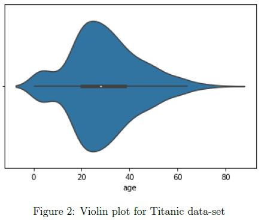
The violin plot shown in Figure 2 demonstrates the age of passengers on the Titanic ship. Mark the approximate age range of most of the passengers.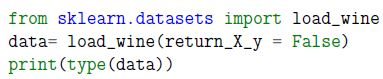
What will be the output of the following code?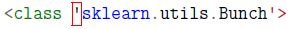
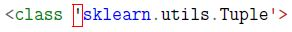
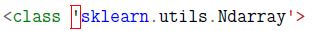
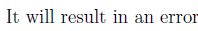
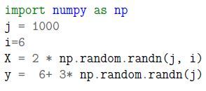
Go through the code snippet given below: What will be the shape of the feature matrix (X.shape) and the label vector (y.shape)?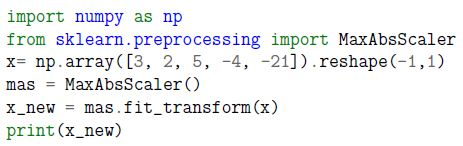
Which of the following options is likely to be the correct output of the code snippet given below?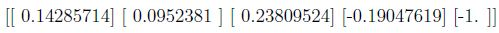
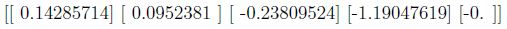
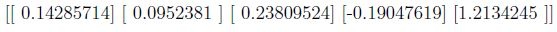
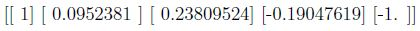
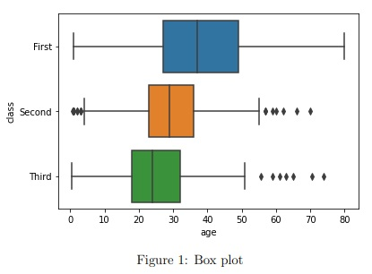
In the figure 1, what are the names of classes arranged in the increasing order of the median values?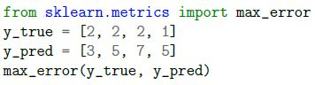
Go through the code snippet given below and mark the correct output.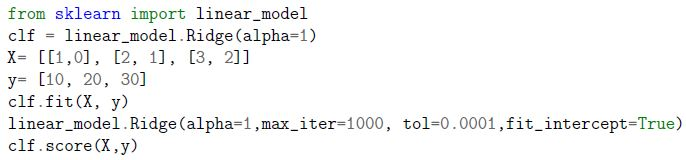
Which of the following is likely to be the correct output of the code given below?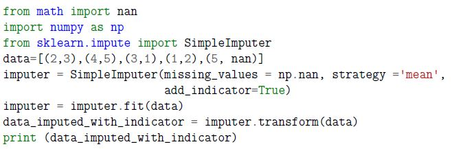
Which of the following is likely to be the correct output of the code given below?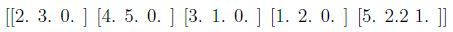
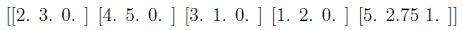
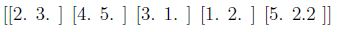
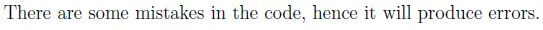
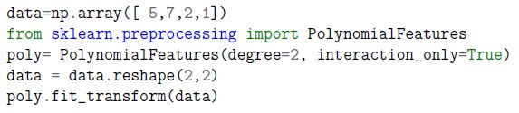
Consider the following code snippet: Which of the following could be the correct output?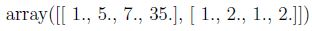
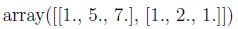
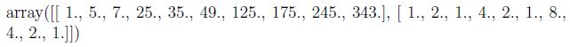
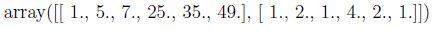
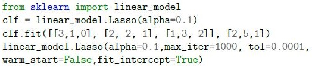
Which of the following options will be the correct output of print(clf.coef_)?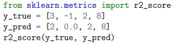
Go through the code snippet given below and mark the correct output.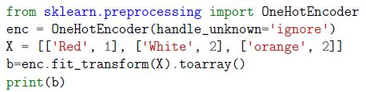
Which of the following is likely to be the correct output of the code given below?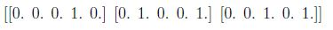
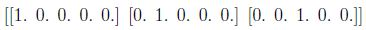
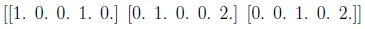
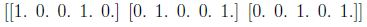
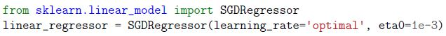
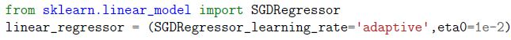
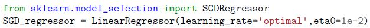
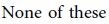
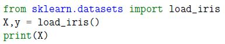
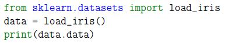
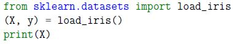
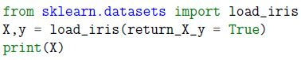
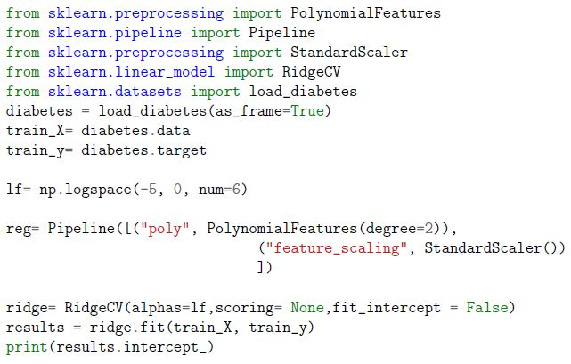
Go through the code block given below: Which of the following can’t be the correct output of the given code block?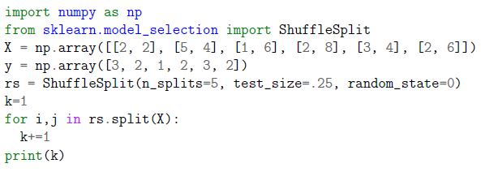
Enter the correct output of the following code block.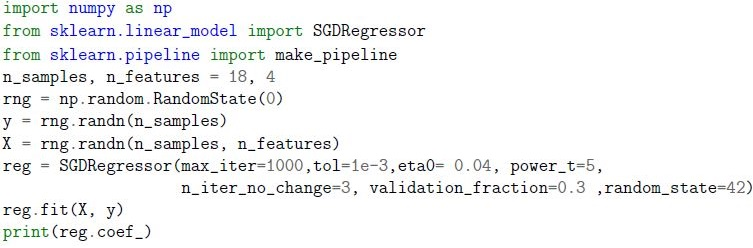
Go through the code snippet given below and answer the given subquestions.Auto-generated summary from the source site. Handy as a checklist; the lessons above explain each idea from scratch.
These graphs and summaries should help you understand the core topics and their relationships, which are essential for the exam.